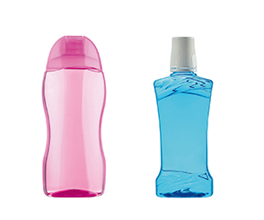

Machine de remplissage cosmétique
Lignes de remplissage cosmétique pour crèmes, lotions, gels et shampooings — précision et finition adaptées au personal care.

Le packaging cosmétique exige dose régulière, bouchon pompe/flip-top correctement serti et étiquette propre. Nous reprenons la même base industrielle que pour les sauces, avec joints et outillage adaptés aux formules soin.
- Crèmes / lotions → piston
- Shampooing / gel → pompe
- Bouchons pompe, flip-top, vis
- Flacons PET / verre
| Précision | Stable pour retail |
|---|---|
| Hygiène | Inox zone produit |
| Évolution | Semi-auto → ligne / monobloc |
Exigences personal care
Les marques cosmétiques jugent le packaging aussi sévèrement que la formule. Dose régulière, bouchon pompe centré, absence de traces sur le flacon : ces détails se jouent sur la ligne. Nous réglons anti-goutte et couple de sertissage en conséquence.
Les petites séries (lancement influenceurs, formats voyage) se prêtent au semi-auto ; les références heartland passent en automatique.
Crèmes, lotions et shampooings
Les crèmes épaisses se comportent comme des sauces pâteuses : le piston est souvent idéal. Les shampooings et gels moussants préfèrent une pompe avec régulation de débit et anti-goutte soigné pour ne pas salir le col avant le clipage de la pompe doseuse.
Le sertissage de pompe cosmétique exige un centrage précis. Nous validons la géométrie du col et la hauteur de sertissage sur échantillon. Un flacon mal centré se traduit immédiatement par des retours magasin.
Séries courtes vs heartland
Les marques beauté africaines lancent souvent des éditions limitées. Le semi-automatique absorbe ces séries. Les références permanentes (gel douche 500 ml, lotion 250 ml) passent ensuite sur une cadence automatique partagée avec d'autres SKU grâce aux recettes PLC.
Conformité packaging
Colleges de pompe, bagues et joints d'étanchéité varient selon marques de bouchons. Joignez références ou échantillons. Nous évitons les mauvaises surprises de sertissage après livraison. Pour les crèmes à particules (exfoliants), le piston grand diamètre reprend la logique sauces.